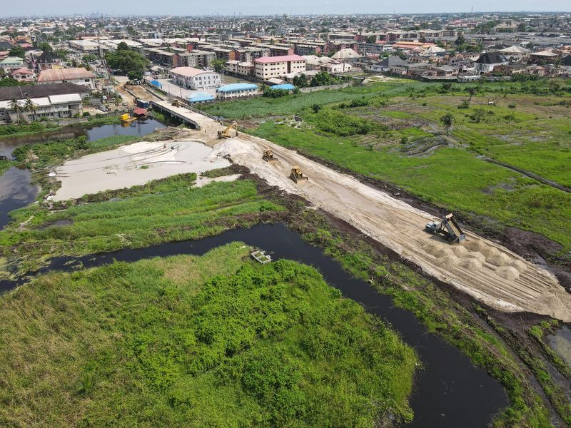

ServiceArtizanni Business Services Ltd
Design, engineering and construction under one accountable team.
Services
02.4
Construction & Civil Works
Buildings, substations, dams, drainage, reclamation and roads, self-delivered.

We build what we design, and we build for other designers too. Our site teams have delivered reinforced-concrete frames, power-infrastructure civils, dam rehabilitation, cofferdams, channelisation and land reclamation.
We own and operate earthmoving and compaction plant, including an SDLG LG953N wheel loader acquired in 2021, and hire specialist equipment where a scheme needs it. Where a group company supplies, we disclose it and compare at least one independent quote.
What this covers
- Residential, commercial and industrial buildings
- Power infrastructure civils: substation earthworks, foundations, access roads, fencing
- Water works: cofferdams, dam and reservoir rehabilitation, dewatering
- Drainage, gabion revetment, erosion control and land reclamation
- Roads, hardstanding, kerbs and external works
- Specialist sub-contract work for main contractors
Related work
Water Resources & Marine Works
Cofferdams, barrage works, dam rehabilitation and reservoir expansion, built in the wet.
Drainage, Erosion Control & Reclamation
Channelisation, gabion revetment and land reclamation: building ground where there was water.

Structures in Frame
Reinforced concrete from foundation to roof.
Next step
Tell us about your project.
Answer a few questions and send them to us on WhatsApp or email. You get a reference number straight away.